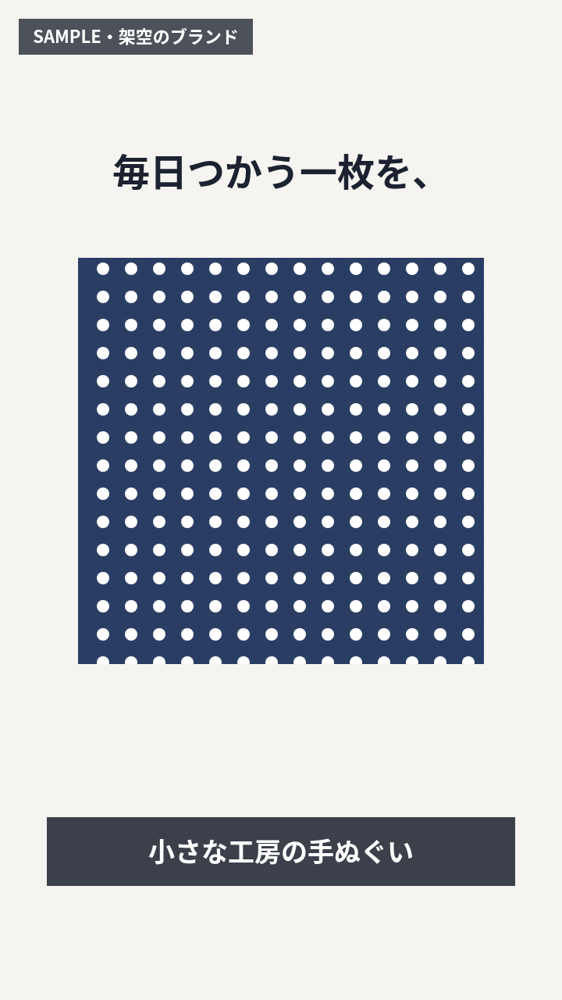
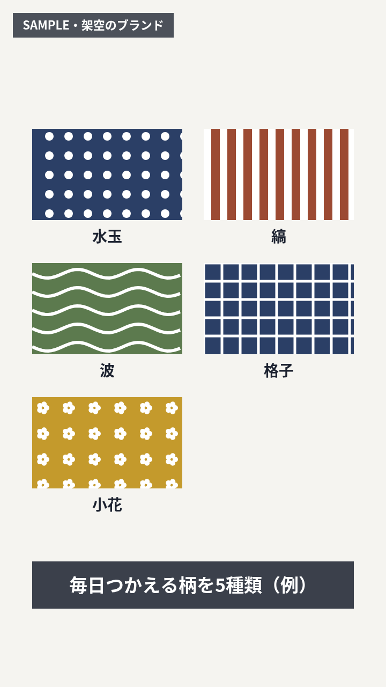
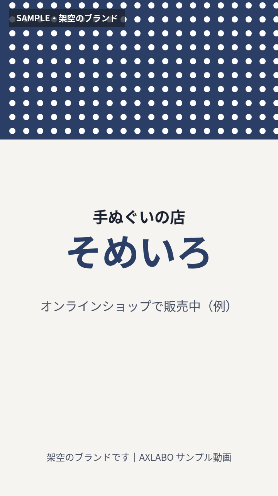

BIZ-023 AI動画制作代行｜DELIVERABLE SAMPLE
SNS用の縦型ショート動画
ご依頼から完成動画までに、お客様が受け取るものを一式で掲載しています。依頼者は架空の手ぬぐいブランドです。
料金は1本 ¥98,000（価格の正本どおり）。納期は案件ごとにご相談のうえ決め、この場ではお約束しません。
CLIENT BRIEF
ご依頼内容（架空）
| 依頼者 | 手ぬぐいの店 そめいろ（架空のブランド） |
|---|---|
| 目的 | ブランドを知ってもらうための、SNS（縦型ショート）用の紹介動画 |
| 長さ・比率 | 20秒・縦 9:16 |
| 伝えたいこと | 一枚ずつ手で染めていること／柄の種類／毎日の使いみち／ブランド名 |
| 素材 | 写真・映像の提供なし（図形とテロップで構成） |
| 音声 | なし（音を出さずに見る前提で、テロップで伝える） |
STRUCTURE & SCRIPT
構成と台本（テロップ）
01
つかむ（0〜4秒）
手ぬぐいが広がる動きで目を止め、コピーを出す。
02
伝える（4〜16秒）
染め方 → 柄 → 使いみちの順に、1場面1メッセージで見せる。
03
覚えてもらう（16〜20秒）
ブランド名と「どこで買えるか」を最後に大きく出す。
テロップ（台本）
- 毎日つかう一枚を、／小さな工房の手ぬぐい
- 一枚ずつ、／型を置き、染料を注いで染めます
- 毎日つかえる柄を5種類（例）
- 台所で／お出かけに／贈りものに｜使うほど、やわらかく
- 手ぬぐいの店 そめいろ／オンラインショップで販売中（例）
SCENE LIST
シーン表
| No. | 秒 | 画面 | テロップ |
|---|---|---|---|
| 1 | 0〜4 | 水玉の手ぬぐいが中央から左右へ広がる | 毎日つかう一枚を、／小さな工房の手ぬぐい |
| 2 | 4〜8 | 白い布が上から縞模様に染まっていく。染料のしずくが落ちる | 一枚ずつ、／型を置き、染料を注いで染めます |
| 3 | 8〜12 | 5種類の柄（水玉・縞・波・格子・小花）が順に並ぶ | 毎日つかえる柄を5種類（例） |
| 4 | 12〜16 | 台所・お出かけ・贈りものの3枚のカードが順に出る | 使うほど、やわらかく |
| 5 | 16〜20 | ブランド名のエンドカード | 手ぬぐいの店 そめいろ／オンラインショップで販売中（例） |
FINISHED VIDEO
完成動画



| 長さ | 20秒 |
|---|---|
| 比率・画素 | 縦 9:16・720×1280 |
| 音 | なし（テロップで伝える） |
| 形式 | WebM（このサンプル） |
一部の古いスマートフォン（iPhone の旧版 Safari 等）では WebM を再生できないことがあります。その場合は左の静止画でご確認ください。
DELIVERY
お受け取りいただくもの
1
構成と台本
ご依頼内容をもとにした構成・テロップ案（このページの「構成と台本」に当たるもの）。
2
シーン表
秒数・画面・テロップを1行ずつ整理した表。内容の確認に使います。
3
完成動画
確認いただいた構成で仕上げた動画ファイル。形式・長さ・修正の回数は契約時に決めます。
このサンプルの作り方について
このサンプル動画は、図形と文字の動きをプログラムで描き、ブラウザの録画機能で書き出したものです。写真・ストック映像・実在の人物やブランドは使っていません。実際のサービスで映像をどの方法で制作するか（AI による映像生成の手段を含む）は、現在決めているところです。BGM・字幕を付けるかどうかは、ご依頼ごとに提供範囲の中で確認します。